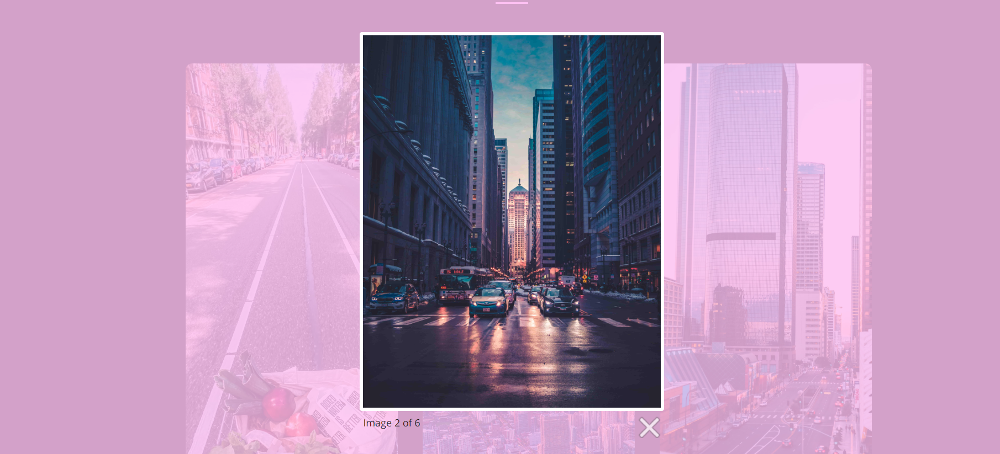
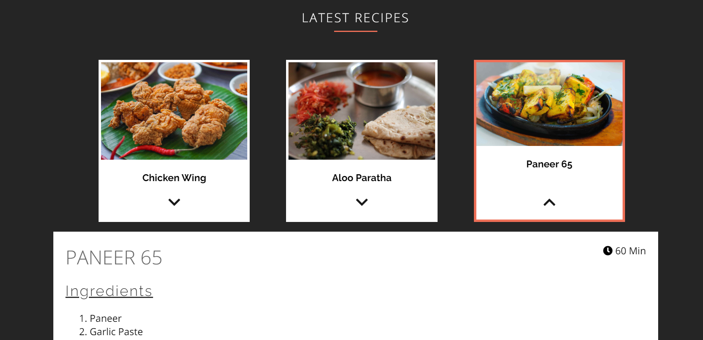
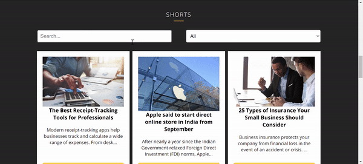

Report (Large Coursework)
Mohammad Hussain Nagaria
Introduction
The main purpose of the website is to provide the user with Articles and Tutorials on the following topics:- Technology and Programming
- Travel and Tourism
- Food
- News: Short Articles
3 things that have inspired me when creating my website
- Dribble: Before I started to create wireframes, I used dribble to get some design inspiration. I searched for magazine website designs and found many stunning designs there. My navigation and footer are highly inspired by this dribble shot.
- Online Tutorials YouTube channel (Channel link): This channel has a lot of tutorials on creating beautiful websites with HTML and CSS. I have many of the videos from this channel and it taught me how to make HTML elements beautiful.
-
Talk on accessibility by Léonie Watson
This talk has really made me think about how important accessibility is for the web. You can find the YouTube Video here
3 ways in which my site is accessible
- The
alttags of all the image elements contain a description of the image to help users with disabilities to visualize the image. -
I have used proper semantic and element tags to make the different parts of the website
more accessible. For instance, use of
articleandfiguretags are used instead of plandivtags. -
Use of
arialabels to make mobile navigation more accessible.
"class="nav-button hamburger hamburger--elastic" aria-label="Menu" aria-controls="navigation" aria-expanded="false"
3 ways in which I have considered usability in my site
-
Mobile Hamburger Navigation: Most websites have hamburger navigation for mobile
screen sizes.
But the hamburger button is positioned at the top left corner of the screen (like many android
apps), this makes reaching to the button a little hard for people with small hands or
large smartphones. I have positioned the hamburger button at the bottom of the screen, which
makes it more reachable and user friendly.

Desktop Navigation:
-
Touch enabled carousel slider:
The inspiration gallery section of the programming page has a slider gallery. I have used flickity in to create a responsive carousel slider. This slider is also touch friendly, so, it makes the user experience better.
-
Image Light Box: The images in the gallery section of the travel page are high quality images. So, I have used
lightbox 2 (and customized it) in order to create a image slideshow. This makes it
easier for the user to enjoy viewing individual images.

3 things I had to learn/find out by myself when creating my site, and describe how I did that
-
CSS Custom Variables: When I wanted to theme my website, i.e., set a
different
theme color for each page using JavaScript, the requirement was to set a primary color
and change it based on the URL the user is currently on. I came across the concept of CSS Custom
Properties (a.k.a. CSS Variables). I
learned it using this
article on MDN. I have used 3 variables to control the color for a page:
--primary-color--primary-backdrop-color--secondary-color
if (location.pathname === "/pages/shorts.html") {
root.style.setProperty('--primary-color', "#ffc93c");
root.style.setProperty('--primary-backdrop-color', "rgba(255, 201, 60, 0.6)");
}
- Modal: Modals are part of many websites and are a way to display information only when it is required. So, I searched how to create a modal on Google and found many articles that showed how to do it. I learned to create a modal using this W3Schools article. I started with the code given on the above website and changed some CSS to match it with my web page. I also added show and hide animations to improve the UX.
-
Intersection Observer API: I have seen this cool effect on many websites, where
some elements animate into the view as we scroll the page. I wanted to implement this
on my website. I looked for possible
methods to do the same. Although, there are many external JS Libraries available for this
task but using the
IntersectionObserverAPI is native and hence I decided to implement the effect without the use of any external library. This effect can be seen on the home page: the categorydivs and avatars animate as you scroll to their position.
I have learned many more new things, I have written some of them as comment in the
report.html file.
What aspect(s) of my work do I think worked well and why?
- Dark Theme: In my opinion, the dark theme worked out very well. The colors make the dark theme shine. This decision turned out well because it looks pleasing to the eye and gives a clean and modern look to the website.
- Shorts filtering functionality: I wanted to implement a search
and filter by category functionality in order to make it easier for the user to get to a
particular article. The function
filterPosts(...)does the heavy lifting here. The function takes two arguments: a search string and a category. After some iteration and conditioning, it filters the list of posts, as the user is applying the filters. - Recipe Viewing: The user can browse through the recipes just by clicking the card. The arrow icon and highlights update to give the user a visual feedback, which in my opinion, improves the user experience. 

What aspect(s) of my work could be improved, and how might I do things differently another time?
-
Travel Page Gallery Loading: Currently, the loading time of the travel page is
comparatively higher than other pages. I would like to use lazy loading for the images
and also use the
picturetag with source sets to improve this next time. - Add chimes for image loading: Nowadays, websites use placeholder images (a.k.a chimes) to show loading images and improve the UX. I think using it can improve the usability of my site.
- SVG Animations: I really love SVGs. They have very small file size and are infinitely scalable. I learned how to create simple vector graphics using SVG but could not use it on this website. Adding micro interactions and animated SVG loaders will definitely make my website better.
- More use of space on very large display sizes: I have not considered very large and retina displays on this website. But it could be a good addition to the website.
What resources were used when creating my work?
- web.dev Measure: I have used this tool to: "See
how well your
website performs. Then, get tips to improve your user experience." - web.dev
For example, the above tool produces an audit report shown below (for the homepage of my website): The report also includes various tips to improve the above scores.
The report also includes various tips to improve the above scores.
- Unsplash: Except the SVGs, all the other images are downloaded from this website.
- Undraw: The hero images and the SVGs inside the inspiration carousel are downloaded from this site.
- RandomUser.Me: The user photos (avatar images) and random names are taken from this website.
- Font Awesome 5: All the icons are from the FontAwesome 5 icons library.
- compressjpeg.com: The images taken from unsplash are huge in size and hence need a lot of compression to make them suitable for websites. Without compression, the load time of the web pages was very high.
- Adobe XD: I have used it to create wireframes and mockups.
- colors.lol: The colors I have used are taken from this website.
Citations
Source Code
[1] Jonathan, Suh, ‘Hamburgers’ (commit c9adb72), 2016. [Animated Icon Library].
https://github.com/jonsuh/hamburgers/releases
[2] Lokesh, Dhakar, ‘lightbox2’ (commit 56b06ac), 2015. [JavaScript Library].
https://github.com/lokesh/lightbox2
[3] David, DeSandro, ‘flickity’ (commit f1341e7), 2017[JavaScript Library].
https://github.com/metafizzy/flickity
Online Resources
[1] fontawesome, ‘Font Awesome 5’, 2017. [Online]. Available: https://fontawesome.com/icons?d=gallery
[Accessed: 15-Aug-2020]
[2] Handlebarsjs.com, 'Handlebars Reference', 2016. [Online]. Available:
http://handlebarsjs.com/reference.html. [Accessed: 20- Aug- 2020].
[3] randomuser.me, ‘Random User Generator’, 2015, [Online], Available: https://randomuser.me/ [Accessed:
20-July-2020]
[4] Limpitsouni, Katerina, ‘Undraw’, 2018, [Online], Available: https://undraw.co/illustrations
[Accessed: 20-July-2020]
[5] unsplash.com, ‘Unsplash’, 2013, [Online], Available: https://unsplash.com/ [Accessed: 20-July-2020]